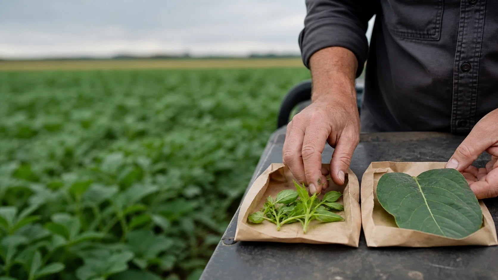
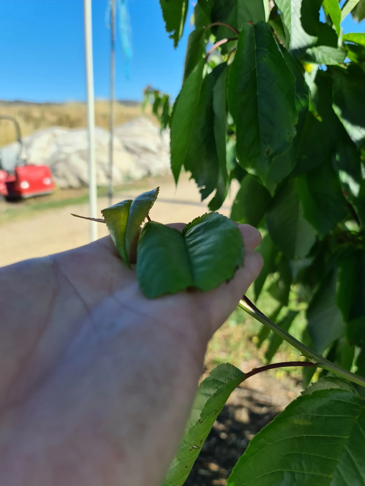

What was measured separately in the defined young and old tissue at this crop stage?

Differential sap analysis
Differential Sap Analysis.
Young and old tissue are collected from the same crop and area at the same time, then measured separately. Comparing the results helps the agronomist investigate differences between tissue ages. Repeat samples can show how those differences change.
Comparing the samples
Keep young and old tissue separate.
DSA uses separate young and old tissue samples, collected and labelled as a pair. The results can be compared with each other and with later samples taken on the same basis.
What differences between the two tissue ages need investigating?
How have the results changed since the previous comparable pair was sampled?
2tissue ages
1sampling event
What the report may include
01
02
03
04
Each result stays matched to its tissue sample.
The team confirms the laboratory tests and crop reference for each request. Results remain identified by crop, variety, paddock or block, sample date and tissue age.
Sugars, pH and EC
Method-specific indicators read with crop stage, light, water, temperature and recent conditions.
Nitrogen measurements
Ammonium, nitrate, Nitrogen in nitrate and total Nitrogen can be reported as distinct measurements.
Major and secondary elements
Potassium, Calcium, Magnesium, Sulphur and Phosphorus, with related measures such as the K/Ca relationship.
Trace and other elements
Silicon, Iron, Manganese, Zinc, Boron, Copper, Molybdenum and other laboratory-reported elements or ions.
More reported measurements do not automatically provide a recommendation. The agronomist considers which results matter to the crop and the issue being investigated.
Comparing testing methods
Standard tissue testing and DSA measure different things.
Standard tissue testing and Differential Sap Analysis use different sampling and laboratory methods. They can complement one another when both are needed to investigate the crop issue.
What was measured in the defined plant part?
- Sample
- The crop-specific tissue or plant part required by the laboratory.
- Method
- Nutrient concentrations in dried plant material, reported on a dry-matter basis.
- Strength
- Assessing the sampled tissue against a suitable crop and stage reference, or comparing consistently collected samples.
How do young and old tissue sampled together compare?
- Sample
- Crop-specific young and old leaves, collected together and kept separate.
- Method
- Nutrients in extracted leaf fluid, with each leaf age reported separately.
- Strength
- The two results, their relationship and changes across comparable repeat pairs.
Different methods and reference values.
Dry tissue and sap results are not directly interchangeable. Their sampling protocols, units and crop references differ. Neither establishes cause by itself; soil, water, crop growth and field observations remain part of the interpretation.

Interpreting the difference
A difference needs interpretation.
Whether the young-tissue result is higher, lower or similar to the old-tissue result, there can be more than one explanation. Mobility and allocation may be relevant, but so can growth dilution, root conditions, water, crop stage, stress, recent inputs and sampling consistency.
- The levels
- Read each tissue result against its method, crop reference and sampled stage.
- The relationship
- A difference between young and old tissue needs investigation before its cause can be identified.
- The context
- Check the pair alongside crop demand, recent conditions, management and other test results.
- The decision
- A difference between two results does not determine a product recommendation. The agronomist reviews the wider crop information first.
Following changes over time
Repeat samples can show what has changed.
The first DSA provides results for a pair of samples at a particular crop stage. A comparable repeat pair can show whether the difference between young and old tissue has changed.
Record the crop, variety, area, stage, date, recent conditions and the tissue age of each sample.
Record any applications, other work or further investigations between samples, and why those decisions were made.
Follow the current crop protocol at the next agreed sampling time so the results can be compared.
Compare the new results with crop response, weather, water and other tests, including relevant harvest or quality records.
Record any changes in tissue, variety, area, stage or handling. These can affect the comparison between tests.
The Hybrid-Ag approach
Position. Pattern. Plan.
DSA is an important part of Hybrid-Ag’s prescription approach. Paired results and repeat samples are interpreted alongside what was happening in the crop, before deciding whether a nutrition recommendation should change.
01Position
What does each tissue age show now?
Establish the crop, variety, area, stage, young result, old result and the method-specific reference.
02Pattern
What may explain the difference?
Compare the difference between the tissue samples and any repeat tests with crop demand, crop load, water, weather, applications and field observations.
03Plan
What should happen next?
Decide whether the results justify a change, need further investigation or should be checked at the next agreed sampling time.
Sampling and results
From sampling instructions to interpretation.
The team confirms the sampling instructions and helps interpret the results. Young and old samples remain separately identified throughout.
01
Confirm the question and protocol
The team confirms the crop, variety, area, stage and current tissue instructions before sampling.
02
Prepare the paired sampling kit
Separate bags and labels are prepared for the young and old tissue collected together.
03
Collect and identify separately
Collect young and old tissue from the same representative area, keeping each sample separately identified during handling.
04
Laboratory analysis
The specialist laboratory reports the young and old samples separately under the relevant method and crop reference.
05
Discuss the results
Hybrid-Ag discusses the paired results and any changes over time with the grower before agreeing on the next step.
Start with the matched pair